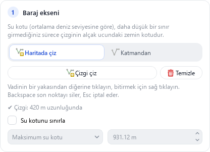
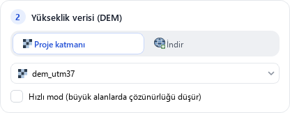
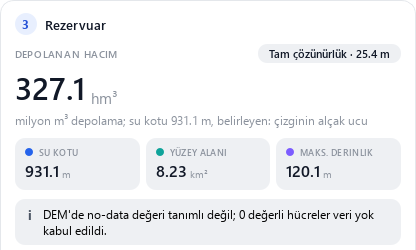
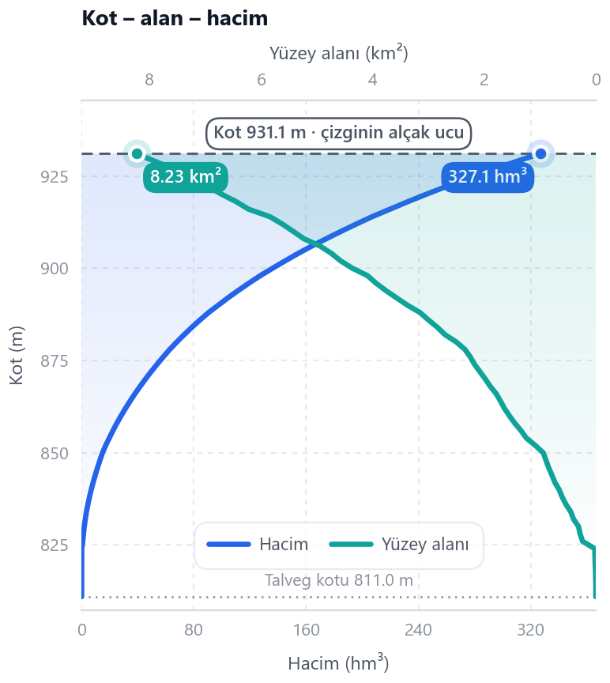
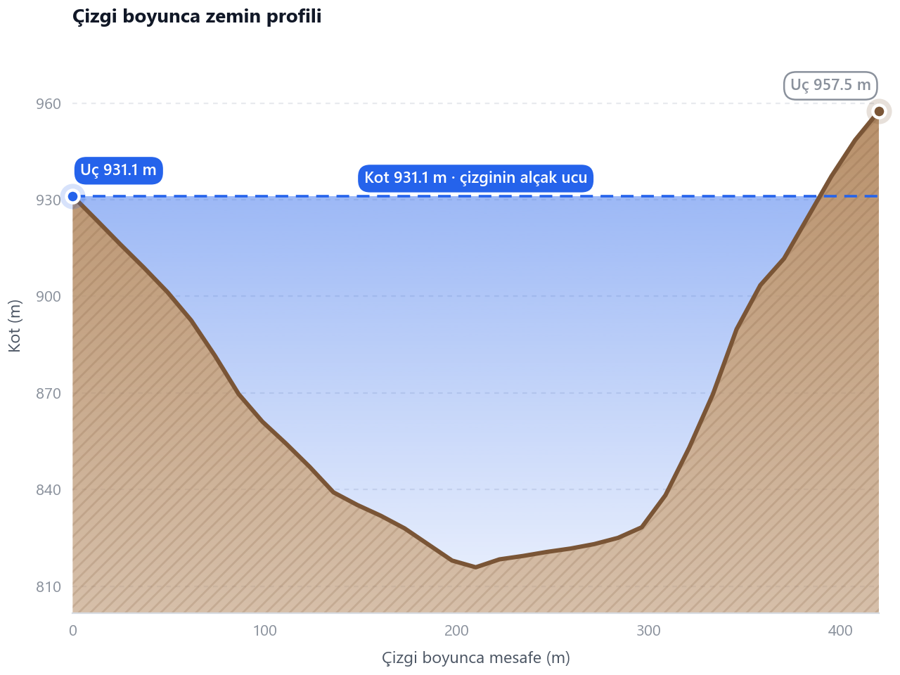

Kullanım kılavuzu
Panel
Yukarıdan aşağıya üç adım.
1 · Baraj ekseni
- Vadi boyunca tıklayın, bitirmek için sağ tıklayın.
- Ya da bir katmandan çizgi alın.
- İsteğe bağlı sınır: maksimum su kotu veya derinlik.
Su kotu = çizginin alçak ucundaki zemin kotu.

2 · Yükseklik verisi
- Proje katmanı: kendi DEM'iniz (en iyisi).
- GEDTM30: küresel çıplak arazi, 30 m.
- Copernicus: küresel yüzey modeli, 30 m.
İndirmeler önbelleğe alınır. Hızlı modu seçmediğiniz sürece tam çözünürlük.

3 · Sonuçlar
- Hacim, su kotu, alan, derinlik.
- Eğriler, profil ve tablo. Değerler için imleci gezdirin.
- Haritaya ekleyin ya da dışa aktarın.



Kullanışlı
⚙ Ayarlar
Açık / koyu · English / Türkçe
⇄ Tarafı değiştir
Su mansapta görünürse
Yerleştir
Ayrı pencere ya da panel
Reservoir Creator · GNU GPL v3 · © 2021–2026 Faruk Gurbuz